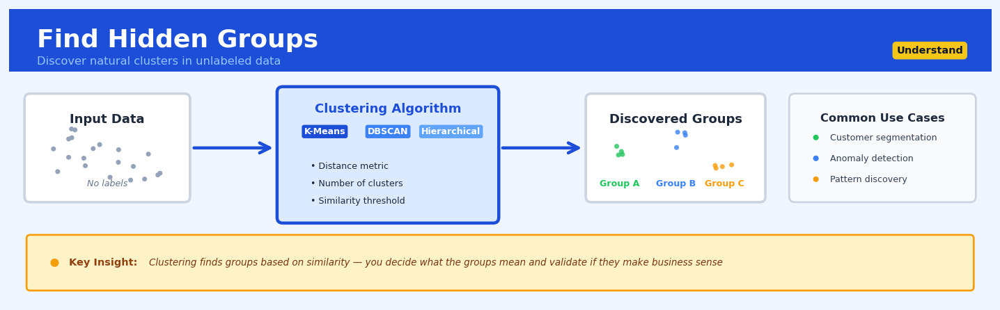

Find Hidden Groups#


The biggest mistake I see is teams running clustering algorithms without first standardizing their features, which causes variables with larger scales to dominate the distance calculations and produce meaningless groups. Always normalize your data and use domain knowledge to validate that your discovered clusters actually represent actionable business segments, not just mathematical artifacts. Remember that clustering is exploratory by nature, so you need multiple iterations with different parameters and algorithms before you can trust the groupings enough to make decisions.
The 60-Second Version#
What it does: Find Hidden Groups automatically discovers natural segments in your data without you telling it what to look for.
When to use it: You have customers, products, or transactions that you suspect fall into different types, but you don’t know how many types or what defines them.
What you get back: Each record gets assigned to a group, plus a profile showing what makes each group distinctive, so you can tailor strategies to each segment.
Difficulty |
Moderate |
Typical runtime |
Seconds to minutes on 100K rows |
What you bring |
A dataset with multiple attributes per record (no labels needed) |
What you get |
Group assignments for each record plus group profiles |
Heuristix bucket |
Understand — Statistical Analysis & Profiling |
The algorithm doesn’t know what makes a “meaningful” business segment—it only finds statistical patterns, so you must validate that the groups it discovers actually matter for your decisions.
Learning Objectives#
After reading this chapter, a business user will be able to:
Identify business situations where natural segments exist but aren’t labeled—such as customer base segmentation, product portfolio grouping, or market basket analysis—and determine when Find Hidden Groups is the appropriate technique.
Interpret cluster profiles by comparing the characteristics that distinguish each group from others, and translate these technical descriptions into actionable business personas or segments that stakeholders can use.
Decide how to allocate differentiated resources, strategies, or communications across discovered segments based on their distinct behavioral or demographic profiles.
After reading this chapter, a data scientist will be able to:
Implement clustering algorithms (k-means, hierarchical, DBSCAN) with appropriate data preprocessing including feature scaling, handling mixed data types, and dimensionality considerations for high-dimensional datasets.
Select the optimal number of clusters by applying multiple validation metrics (silhouette score, elbow method, gap statistic) and balancing statistical quality measures against business interpretability constraints.
Diagnose when clustering has failed due to lack of natural structure, curse of dimensionality, or inappropriate distance metrics, and distinguish between weak-but-real patterns versus algorithmic artifacts in the results.
Overview#
Find Hidden Groups is an unsupervised learning technique that discovers natural groupings within unlabelled data by partitioning observations into clusters such that members of the same cluster are more similar to each other than to members of other clusters. The core purpose is to reveal latent structure in data without prior knowledge of group membership, enabling segmentation, anomaly detection, and exploratory data analysis. This technique belongs to the family of clustering methods, which sit within the broader domain of unsupervised machine learning and multivariate statistical analysis.
When to Use This#
Use this when:
Customer segmentation is required: You have transactional, behavioural, or demographic data on customers and need to identify distinct segments for targeted marketing, product development, or service differentiation—without predefined categories.
Exploring unknown data structure: You are working with a new dataset and need to understand whether natural groupings exist before building supervised models or designing business processes around assumed categories.
Reducing complexity in large populations: You have thousands of products, locations, or entities that need to be grouped into a manageable number of archetypes for operational decision-making or portfolio management.
Anomaly detection via cluster membership: You want to identify outliers as observations that do not fit well into any cluster, or form their own singleton clusters—useful in fraud detection, quality control, or network intrusion detection.
Market basket or behavioural pattern discovery: You need to identify groups of users, patients, or machines that exhibit similar patterns of behaviour, consumption, or failure modes without labels.
Preprocessing for supervised learning: You want to create cluster membership as a derived feature, or stratify training data to ensure representation across latent subpopulations.
Dimensionality reduction interpretation: You have reduced high-dimensional data (e.g., via PCA) and want to identify whether the reduced representation reveals meaningful groupings.
Do NOT use this when:
You have labelled data and a clear classification objective: If ground-truth labels exist and the goal is prediction, use supervised classification methods instead—clustering ignores label information.
The data lacks meaningful numeric or categorical structure: Clustering requires a sensible distance metric; if features are incomparable, arbitrary, or dominated by noise, clusters will be meaningless.
You need causal inference or hypothesis testing: Clustering is descriptive and exploratory; it does not establish causal relationships or test statistical hypotheses about group differences.
Questions This Answers#
Customer & Market Segmentation#
Who are our actual customer groups, and how do they differ from our assumed segments?
Can we identify distinct shopping patterns in our transaction data that we’re not currently targeting?
Are there natural tiers among our B2B clients that should inform our pricing strategy?
Which customers behave similarly to our top 20% revenue generators, and how can we find more like them?
Do our international markets cluster into regional groups that would let us consolidate our go-to-market approach?
Operational Patterns & Anomalies#
Are there hidden patterns in our product returns that point to specific quality issues we’re missing?
Which of our 2,000 retail locations perform similarly enough to share operational playbooks?
Can we spot unusual behavior in our network traffic that might indicate security threats or fraud?
Are there natural groupings in our supply chain disruptions that share common root causes?
Do our customer support tickets fall into distinct issue types that would justify specialized teams?
Strategic Planning & Resource Allocation#
Should we organize our sales territories differently based on actual market similarities rather than geography?
Which product features cluster together in usage patterns, and does that suggest bundling opportunities?
Are there identifiable employee segments with different engagement drivers that need tailored retention programs?
How many distinct content preference groups exist in our user base, and what does each group want?
How It Works#
Imagine you’re a teacher on the first day of school with 30 new students scattered randomly around the classroom. You don’t know anything about them yet, but you notice that some kids are sitting close together, chatting animatedly about video games, while another group nearby is trading soccer cards, and a cluster in the back corner is comparing their sketchbooks. Without asking a single question or looking at any enrollment forms, you can already spot natural friend groups forming based on where students sit and what they’re doing. Find Hidden Groups works exactly this way—it looks at where your data points “sit” in multidimensional space and identifies which ones are naturally hanging out together.
BEFORE: Unlabeled customers plotted by spending & visit frequency
High
Spending x
↑ x x x x x
│ x x x
│
│ x x x x
│ x x
│ x x x
│ x x x x
└────────────────────────────→
High Visits
AFTER: Same customers assigned to discovered clusters
High
Spending [A]
↑ [A][A] [B][B][B]
│ [A] [B][B]
│
│ [C][C][C][C]
│ [C][C]
│ [D][D][D]
│ [D][D][D][D]
└────────────────────────────→
High Visits
Cluster A: High spenders, rare visits
Cluster B: High spenders, frequent visits
Cluster C: Low spenders, rare visits
Cluster D: Low spenders, frequent visits
Step 1: Start with unmarked data points. The algorithm begins with your raw data where each observation is described by multiple measurements (like customer age, income, and purchase frequency), but none have group labels. Think of each observation as a dot floating in space, where its position is determined by all its measurement values.
Step 2: Make an initial guess about group centers. The algorithm randomly picks starting positions for cluster centers (called centroids)—these are like placing flags in different spots of your data space. If you want three groups, it plants three flags.
Step 3: Assign each point to its nearest center. Every data point looks around and asks “which flag am I closest to?” and joins that group. Distance is measured using all the variables at once, so a point joins the group whose center it most closely resembles across all dimensions.
Step 4: Recalculate the center of each group. Once all points have joined a group, the algorithm finds the average position of all members in each cluster and moves the flag to that new center point. The flag relocates to the middle of its members.
Step 5: Reassign points based on the new centers. With flags in new positions, points check again whether they’re still closest to their current flag or if they should switch to a different group. Some points near the boundaries might change teams.
Step 6: Repeat until groups stabilize. The algorithm cycles through steps four and five—moving flags to group centers, then reassigning members—until no points want to switch groups anymore. At this point, the natural groupings have been discovered.
The key insight: Objects that are genuinely similar across multiple characteristics will naturally cluster together in space, and by repeatedly refining group boundaries based on actual proximity, the algorithm reveals these hidden structures without needing any prior labels.
The Intuition#
Imagine you are a museum curator who has received a large shipment of ancient pottery shards from an archaeological dig. The shards have no labels indicating their origin, culture, or time period. Your task is to sort them into groups that might represent different civilisations or pottery traditions. You would naturally start by examining each shard’s characteristics—colour, thickness, texture, decorative patterns—and placing similar shards together. As you work, groups would emerge: perhaps one pile of thin, red-glazed pieces with geometric patterns, another of thick, undecorated grey fragments. You are discovering structure that was always present in the data, not imposing categories from outside.
This is precisely what clustering algorithms do mathematically. They examine the features of each observation, compute how similar or different observations are from one another, and iteratively assign observations to groups such that within-group similarity is maximised while between-group similarity is minimised. The algorithm has no knowledge of what the groups “mean”—that interpretation is the analyst’s responsibility. The pottery shards might cluster by time period, by workshop, by intended use, or by some combination. The algorithm finds the structure; the domain expert provides the meaning.
The most widely used clustering method—and the default in most platforms including Heuristix—is K-means clustering. The intuition behind K-means is elegantly simple: if we knew where the centre of each group was located in feature space, we could assign each observation to its nearest centre. Conversely, if we knew which observations belonged to each group, we could compute the centre as the average of those observations. K-means exploits this duality by alternating between these two steps: assign observations to nearest centres, then recompute centres as group averages. This alternation continues until assignments stabilise. The result is a partition of the data into \(K\) groups, where \(K\) is specified by the analyst, and each group is represented by its centroid—a prototype observation that summarises the group.
The Mathematics#
Problem Setup and Notation#
Let \(\mathbf{X} = \{\mathbf{x}_1, \mathbf{x}_2, \ldots, \mathbf{x}_n\}\) denote a dataset of \(n\) observations, where each observation \(\mathbf{x}_i \in \mathbb{R}^p\) is a \(p\)-dimensional feature vector. Our objective is to partition these observations into \(K\) disjoint clusters \(C_1, C_2, \ldots, C_K\) such that:
Each cluster \(C_k\) is associated with a centroid \(\boldsymbol{\mu}_k \in \mathbb{R}^p\), which represents the “centre” of the cluster in feature space.
The K-Means Objective Function#
K-means seeks to minimise the within-cluster sum of squares (WCSS), also known as the inertia:
where \(\|\cdot\|\) denotes the Euclidean norm. Expanding the squared norm:
This objective function measures the total squared deviation of observations from their assigned cluster centroids. Minimising \(J\) produces compact, spherical clusters.
The Lloyd-Forgy Algorithm#
The standard algorithm for minimising \(J\) is the Lloyd-Forgy algorithm, which alternates between two steps:
Step 1: Assignment. Given current centroids \(\boldsymbol{\mu}_1, \ldots, \boldsymbol{\mu}_K\), assign each observation to the nearest centroid:
Ties are broken arbitrarily. This step minimises \(J\) with respect to cluster assignments, holding centroids fixed.
Step 2: Update. Given current assignments, recompute each centroid as the mean of its assigned observations:
This step minimises \(J\) with respect to centroids, holding assignments fixed. To see why the mean is optimal, take the derivative of the within-cluster sum of squares for cluster \(k\):
Solving yields:
Convergence. Since each step decreases (or maintains) \(J\), and there are finitely many possible partitions, the algorithm must converge. However, convergence is to a local minimum, not necessarily the global minimum.
Initialisation and the K-Means++ Algorithm#
The choice of initial centroids critically affects the final solution. Poor initialisation can lead to suboptimal local minima. The K-means++ initialisation procedure provides probabilistic guarantees:
Choose the first centroid \(\boldsymbol{\mu}_1\) uniformly at random from \(\mathbf{X}\).
For \(k = 2, \ldots, K\), choose \(\boldsymbol{\mu}_k\) from \(\mathbf{X}\) with probability proportional to \(D(\mathbf{x})^2\), where \(D(\mathbf{x})\) is the distance from \(\mathbf{x}\) to the nearest already-chosen centroid.
This procedure ensures initial centroids are well-spread, and provides an expected approximation ratio of \(O(\log K)\) to the optimal solution.
Assumptions of K-Means#
The K-means algorithm makes several implicit assumptions:
Euclidean distance is meaningful: Features must be numeric, and Euclidean distance must represent a sensible notion of dissimilarity. This typically requires standardisation of features to comparable scales.
Clusters are spherical and equally sized: The algorithm partitions space using Voronoi cells around centroids, which are convex and tend toward spherical shapes. Elongated, irregular, or differently-sized clusters may be poorly captured.
Clusters have similar variance: K-means implicitly assumes homoscedasticity across clusters. Clusters with very different dispersions may be split or merged incorrectly.
The number of clusters \(K\) is known: K-means requires \(K\) as input. Determining the appropriate \(K\) is a separate problem.
Choosing the Number of Clusters#
Several heuristics exist for selecting \(K\):
Elbow Method. Plot \(J(K)\) against \(K\) for \(K = 1, 2, \ldots, K_{\max}\). The “elbow” point—where the rate of decrease sharply diminishes—suggests an appropriate \(K\).
Silhouette Score. For each observation \(i\), compute:
where \(a(i)\) is the mean distance from \(i\) to other observations in the same cluster, and \(b(i)\) is the mean distance to observations in the nearest neighbouring cluster. Values range from \(-1\) to \(1\), with higher values indicating better-defined clusters. The mean silhouette score across observations is computed for each \(K\).
Gap Statistic. Compare the observed within-cluster dispersion to that expected under a null reference distribution (typically uniform). The optimal \(K\) is where the gap is largest.
Edge Cases and Degenerate Conditions#
Empty clusters: If an assignment step leaves a cluster with no observations, the centroid is undefined. Common remedies include reinitialising the empty centroid from a random observation or from the observation furthest from its current centroid.
Single-observation clusters: Legitimate when \(K\) approaches \(n\), but often indicates over-clustering.
Identical observations: Multiple identical observations assigned to the same cluster contribute zero to WCSS but inflate cluster size.
High dimensionality: In very high dimensions, Euclidean distances become less discriminative (the “curse of dimensionality”), and dimensionality reduction prior to clustering is advisable.
Relationship to Other Methods#
K-means is equivalent to fitting a Gaussian Mixture Model (GMM) with equal, spherical covariances and hard assignments. GMMs generalise K-means by allowing soft probabilistic assignments and cluster-specific covariance structures. Hierarchical clustering provides a complementary approach that does not require prespecification of \(K\) and produces a dendrogram of nested partitions. DBSCAN and other density-based methods can identify clusters of arbitrary shape and automatically determine the number of clusters, but require different hyperparameters.
Understanding the Mathematics#
Distance Between Points: Euclidean Distance#
The equation:
Read it aloud:
The distance between point i and point j equals the square root of the sum of squared differences across all features, where for each feature k, we subtract point j’s value from point i’s value, square that difference, add up all those squared differences, and take the square root.
What each symbol means:
\(d(x_i, x_j)\) = distance between customer i and customer j
\(x_i\) = the feature vector for customer i (all their measurements)
\(x_{ik}\) = customer i’s value on feature k (like their age or spending)
\(p\) = total number of features we’re measuring
\(\sum\) = add up all the values
\((x_{ik} - x_{jk})^2\) = squared difference on feature k
A concrete numerical example:
Suppose we have two customers with three features: age, annual spending (\(000s), and visits per year. Customer 1: age=35, spending=\)45k, visits=12. Customer 2: age=42, spending=$38k, visits=20.
Distance = \(\sqrt{(35-42)^2 + (45-38)^2 + (12-20)^2}\) = \(\sqrt{(-7)^2 + (7)^2 + (-8)^2}\) = \(\sqrt{49 + 49 + 64}\) = \(\sqrt{162}\) = 12.73
Why this equation matters:
Clustering algorithms group customers by similarity, and this equation defines what “similar” means—without a distance measure, we have no way to decide which customers belong together.
Cluster Center: The Centroid#
The equation:
Read it aloud:
The center point of cluster c equals the average of all data points assigned to that cluster, calculated by adding up all points in the cluster and dividing by how many points there are.
What each symbol means:
\(\mu_c\) = the centroid (center point) of cluster c
\(n_c\) = number of points in cluster c
\(C_c\) = the set of all points assigned to cluster c
\(x_i\) = the feature vector for point i
\(\sum_{i \in C_c}\) = sum over all points belonging to cluster c
A concrete numerical example:
We have a cluster containing three customers with spending amounts: \(32k, \)41k, and $36k. The centroid spending is:
Centroid = \(\frac{32 + 41 + 36}{3} = \frac{109}{3} = 36.33k\)
If these customers also have ages (28, 35, 31), the age centroid is:
Age centroid = \(\frac{28 + 35 + 31}{3} = \frac{94}{3} = 31.33\) years
Why this equation matters:
Every cluster needs a representative “typical member”—the centroid serves as that prototype, allowing us to describe what a cluster represents and to assign new observations to the nearest group.
Within-Cluster Variation: Sum of Squared Distances#
The equation:
Read it aloud:
The total variation within cluster c equals the sum of squared distances from every point in the cluster to the cluster’s center.
What each symbol means:
\(W(C_c)\) = total within-cluster variation for cluster c
\(d(x_i, \mu_c)\) = distance from point i to the centroid
\(d(x_i, \mu_c)^2\) = that distance, squared
\(\sum_{i \in C_c}\) = sum over all points in cluster c
A concrete numerical example:
Suppose a customer segment has a centroid at spending=\(40k. Three customers in this segment spend \)38k, \(42k, and \)41k. Their distances from the center are 2, 2, and 1 (in thousands).
Within-cluster variation = \((2)^2 + (2)^2 + (1)^2 = 4 + 4 + 1 = 9\)
Why this equation matters:
This measures how “tight” or homogeneous a cluster is—lower values mean members are truly similar, while high values suggest we’ve forced together customers who don’t really belong in the same segment.
The Big Picture#
The mathematics of clustering solves a fundamental optimization problem: partition observations to minimize within-cluster variation while maximizing between-cluster separation. We use Euclidean distance because it naturally extends our intuitive notion of “closeness” into multiple dimensions, making it computationally tractable to compare customers across dozens of attributes simultaneously. The iterative refinement of centroids and cluster assignments creates a feedback loop where each step improves the grouping until we reach a stable configuration. Ultimately, the math transforms a subjective question—“which customers are similar?”—into an objective optimization: find the partition where members of each group are as close to their group’s center as mathematically possible.
Python Implementation#
import numpy as np
import pandas as pd
import matplotlib.pyplot as plt
from sklearn.datasets import make_blobs
from sklearn.preprocessing import StandardScaler
from sklearn.cluster import KMeans
from sklearn.metrics import silhouette_score, silhouette_samples
# -----------------------------------------------------------------------------
# Example 1: Basic K-Means Clustering with Synthetic Data
# -----------------------------------------------------------------------------
# Generate synthetic data with 4 natural clusters
np.random.seed(42)
X, y_true = make_blobs(
n_samples=500,
n_features=2,
centers=4,
cluster_std=1.0,
random_state=42
)
# Standardise features (critical for distance-based methods)
scaler = StandardScaler()
X_scaled = scaler.fit_transform(X)
# Fit K-Means with K=4 clusters
kmeans = KMeans(
n_clusters=4, # Number of clusters
init='k-means++', # Smart initialisation
n_init=10, # Number of random restarts
max_iter=300, # Maximum iterations per run
random_state=42
)
kmeans.fit(X_scaled)
# Extract results
cluster_labels = kmeans.labels_ # Cluster assignment for each observation
centroids = kmeans.cluster_centers_ # Centroid coordinates (in scaled space)
inertia = kmeans.inertia_ # Within-cluster sum of squares
print("Cluster Assignments (first 20):", cluster_labels[:20])
print(f"Inertia (WCSS): {inertia:.2f}")
print(f"Number of iterations: {kmeans.n_iter_}")
# Compute silhouette score for cluster quality assessment
sil_score = silhouette_score(X_scaled, cluster_labels)
print(f"Silhouette Score: {sil_score:.3f}")
# -----------------------------------------------------------------------------
# Example 2: Elbow Method for Selecting K
# -----------------------------------------------------------------------------
K_range = range(1, 11)
inertias = []
silhouette_scores = []
for k in K_range:
km = KMeans(n_clusters=k, init='k-means++', n_init=10, random_state=42)
km.fit(X_scaled)
inertias.append(km.inertia_)
if k > 1: # Silhouette requires at least 2 clusters
silhouette_scores.append(silhouette_score(X_scaled, km.labels_))
# Display elbow analysis results
print("\nElbow Analysis:")
print("K\tInertia\t\tSilhouette")
for i, k in enumerate(K_range):
sil = silhouette_scores[i-1] if k > 1 else "N/A"
sil_str = f"{sil:.3f}" if isinstance(sil, float) else sil
print(f"{k}\t{inertias[i]:.2f}\t\t{sil_str}")
# -----------------------------------------------------------------------------
# Example 3: Detailed Cluster Profiling
# -----------------------------------------------------------------------------
# Create a DataFrame with cluster assignments
df = pd.DataFrame(X_scaled, columns=['Feature_1', 'Feature_2'])
df['Cluster'] = cluster_labels
# Compute cluster summaries
cluster_profile = df.groupby('Cluster').agg(['mean', 'std', 'count'])
print("\nCluster Profiles:")
print(cluster_profile)
# Compute per-observation silhouette values
sample_silhouettes = silhouette_samples(X_scaled, cluster_labels)
df['Silhouette'] = sample_silhouettes
# Identify poorly-fitting observations (potential outliers)
outlier_threshold = 0.0
potential_outliers = df[df['Silhouette'] < outlier_threshold]
print(f"\nObservations with silhouette < {outlier_threshold}: {len(potential_outliers)}")
# -----------------------------------------------------------------------------
# Example 4: Customer Segmentation on Realistic Data
# -----------------------------------------------------------------------------
# Simulate realistic customer data
np.random.seed(123)
n_customers = 1000
customer_data = pd.DataFrame({
'customer_id': range(n_customers),
'annual_spend': np.concatenate([
np.random.normal(500, 100, 300), # Low spenders
np.random.normal(2000, 300, 400), # Medium spenders
np.random.normal(8000, 1000, 300) # High spenders
]),
'purchase_frequency': np.concatenate([
np.random.normal(3, 1, 300),
np.random.normal(12, 3, 400),
## Visualisations


## Using This in Heuristix
### What You'll Need
The **Find Hidden Groups** node expects numeric data — think of it as looking for patterns in measurements, not categories. Connect it to a dataset with at least two numeric columns (your clustering dimensions) and enough rows to form meaningful groups (typically 50+ observations work well).
**Input requirements:**
- **Required**: 2+ numeric columns to cluster on
- **Optional**: An ID column to track which observation is which
- **Data shape**: Each row represents one item/customer/event to be grouped
Here's a simple example of what goes in:
| customer_id | avg_purchase | visit_frequency | recency_days |
|-------------|--------------|-----------------|--------------|
| C001 | 145.50 | 12 | 5 |
| C002 | 45.20 | 3 | 45 |
| C003 | 230.00 | 18 | 2 |
### Configuration Parameters
| Parameter | What It Controls | Default | When to Change |
|-----------|-----------------|---------|----------------|
| **Number of Clusters** | How many groups to create | 3 | Increase if you need finer segmentation (5-7 groups). Decrease for simpler, broader categories (2-3 groups). |
| **Clustering Method** | The algorithm used | K-Means | Switch to Hierarchical for smaller datasets (<1000 rows) or when cluster shapes aren't spherical. Use DBSCAN if you suspect outliers. |
| **Distance Metric** | How "similarity" is measured | Euclidean | Change to Manhattan for data with many dimensions, or Cosine for normalized/scaled features. |
| **Standardize Features** | Scale all columns to same range | On | Keep on unless your variables are already on comparable scales and those differences matter. |
| **Random Seed** | Makes results reproducible | 42 | Change only if comparing multiple runs or sharing with collaborators. |
| **Max Iterations** | How hard the algorithm tries | 300 | Increase if you see a "did not converge" warning (rare with clean data). |
### What You'll Get Out
**New Columns Added:**
- **cluster_id**: The group assignment for each row (0, 1, 2, etc.)
- **distance_to_centroid**: How "typical" each item is within its cluster (lower = more typical)
**Visualizations Displayed:**
- **Cluster Scatter Plot**: Your data in 2D/3D space with color-coded groups — instantly see separation quality
- **Cluster Sizes Bar Chart**: How many items landed in each group
- **Silhouette Plot**: Quality metric showing how well-defined your clusters are (aim for >0.5)
- **Feature Importance**: Which input columns most strongly define the clusters
**Summary Metrics Panel:**
- Overall silhouette score (clustering quality: 0-1 scale)
- Within-cluster variance (lower is tighter grouping)
- Between-cluster separation (higher is better)
### Connecting Downstream
After clustering, you'll typically:
1. **Profile Groups** → Connect to the **Summarize by Group** node to understand what makes each cluster unique (average purchase, common behaviors, etc.)
2. **Filter & Export** → Use **Filter Rows** to isolate specific clusters for targeted action
3. **Predict Membership** → Feed into **Train Classifier** to predict which cluster new observations belong to
4. **Visualize Further** → Connect to **Custom Chart** for domain-specific cluster visualization
### Quick Start: Customer Segmentation
1. **Connect your customer data** with at least purchase amount, frequency, and recency columns
2. **Set Number of Clusters to 4** (a good starting point for RFM segmentation)
3. **Keep Standardize Features ON** (these metrics have different scales)
4. **Run the node** and check the silhouette score — aim for >0.4
5. **Connect to Summarize by Group** to profile each segment's characteristics
6. **Adjust cluster count** up or down based on whether segments feel too broad or too granular
### Pro Tips
- **Start with more clusters than you think you need**, then merge similar ones — easier than splitting
- **The "elbow method"** isn't automated here: run multiple times with 2, 3, 4, 5 clusters and watch how the within-cluster variance drops off
- **Low silhouette scores (<0.3)** suggest your data may not have natural groupings — that's useful information too
- **Check distance_to_centroid** to find your most "typical" examples of each cluster — perfect for personas or representative samples
- **Exclude purely identifying columns** (names, IDs) from clustering but keep them in your dataset for labeling results later
## Config Recipes
### Recipe 1: Quick Exploration
- **When to use:** Initial data exploration when you have no idea how many natural groups exist and need rapid feedback to inform next steps.
- **Settings:**
| Parameter | Value | Why |
|-----------|-------|-----|
| algorithm | K-Means | Fastest convergence, lowest computational overhead |
| k_range | 2-10 | Covers most business scenarios without excessive computation |
| initialization | k-means++ | Better starting positions than random, minimal time cost |
| max_iterations | 100 | Sufficient for convergence on well-separated clusters |
| n_init | 10 | Balance between stability and speed |
| distance_metric | Euclidean | Computationally cheapest option |
- **What you get:** Rapid cluster assignments across multiple k values with elbow plots and silhouette scores to guide further investigation.
- **Trade-off:** You sacrifice robustness to outliers and may miss non-spherical cluster shapes that more sophisticated algorithms would detect.
### Recipe 2: Production Segmentation
- **When to use:** Deploying customer segmentation or operational groupings where stability, reproducibility, and defensibility matter more than runtime.
- **Settings:**
| Parameter | Value | Why |
|-----------|-------|-----|
| algorithm | HDBSCAN | Robust to noise, discovers variable-density clusters |
| min_cluster_size | 50 | Ensures segments are actionable (not singletons) |
| min_samples | 5 | Conservative noise detection |
| cluster_selection_method | eom (Excess of Mass) | Stable across hierarchical levels |
| distance_metric | Manhattan | More robust to outliers than Euclidean |
| validation | Stability analysis with bootstrapping (500 iterations) | Quantifies cluster reliability |
- **What you get:** Hierarchical cluster structure with confidence scores, automatic outlier detection, and stability metrics for each cluster.
- **Trade-off:** You accept 5-10x longer runtime and require more memory for the dendrogram hierarchy.
### Recipe 3: High-Dimensional Text or Genomic Data
- **When to use:** Clustering datasets with hundreds or thousands of features where distance metrics become unreliable (curse of dimensionality).
- **Settings:**
| Parameter | Value | Why |
|-----------|-------|-----|
| preprocessing | PCA to 50 components (95% variance) | Dimensionality reduction before clustering |
| algorithm | Gaussian Mixture Models | Models elliptical clusters in reduced space |
| n_components | 3-12 | Realistic range for latent topics/groups |
| covariance_type | full | Captures feature correlations post-PCA |
| initialization | Multiple random starts (n_init=20) | Critical in high dimensions |
| distance_metric | Cosine (pre-PCA) | Appropriate for sparse, high-dimensional vectors |
- **What you get:** Probabilistic cluster memberships that respect feature correlations and provide uncertainty quantification for each assignment.
- **Trade-off:** You lose interpretability of the original feature space and must explain clusters in terms of principal components.
### Recipe 4: Time-Series Behavioral Cohorts
- **When to use:** Grouping user journeys, patient disease progressions, or equipment degradation patterns where sequence matters more than snapshot similarity.
- **Settings:**
| Parameter | Value | Why |
|-----------|-------|-----|
| feature_engineering | Extract: trend slope, variance, autocorrelation, peak count | Captures temporal characteristics |
| algorithm | Agglomerative Hierarchical | Provides dendrogram for exploring granularity |
| linkage | Ward | Minimizes within-cluster variance for time patterns |
| distance_metric | Dynamic Time Warping (DTW) | Handles sequences of different lengths/phases |
| n_clusters | Cut dendrogram at height=2.5 | Let data dictate grouping via visual inspection |
- **What you get:** Trajectory-based segments that group similar temporal behaviors regardless of exact timing alignment.
- **Trade-off:** You require substantially more feature engineering upfront and DTW computation scales O(n²) with sequence length.
## Business Applications
**Financial Services**
A mid-sized UK mortgage lender with 180,000 customers struggled to identify early warning signs of payment difficulties before accounts became delinquent. By applying clustering to transaction patterns, account balance volatility, payment timing, and credit utilisation behaviour, the lender discovered seven distinct financial stress profiles that weren't captured by traditional credit scores alone. The bank now intervenes proactively with tailored support programmes, reducing 90-day arrears by 41% and cutting write-offs by £3.2M annually while improving customer satisfaction scores by 18 points.
**Retail & E-commerce**
An online fashion retailer with 2.4M SKUs across 800 brands faced a merchandising nightmare: which products to feature together, which to discount, and which to discontinue? Clustering purchase basket patterns revealed 23 distinct shopping personas—not by demographics, but by actual buying behaviour. One surprising cluster of "minimal cart, maximum frequency" shoppers represented 12% of revenue but had been overlooked by traditional RFM segmentation. Re-optimising inventory allocation and email campaigns around these discovered segments lifted conversion rate from 2.3% to 3.8% and reduced overstock write-downs by £4.7M.
**Healthcare**
A regional hospital network serving 420,000 patients wanted to predict readmission risk but found standard models missed important patterns. Clustering 18 months of clinical pathways, prescription histories, and post-discharge behaviour uncovered nine patient journey archetypes, including a previously unrecognised "frequent non-compliant" group accounting for 31% of unplanned readmissions. Targeted interventions for these clusters reduced 30-day readmissions by 27% and saved approximately £2.8M in preventable acute care costs.
**Insurance**
A commercial motor insurer processing 8,500 claims monthly couldn't distinguish genuinely complex claims from fraudulent ones efficiently. Applying clustering to claim narratives, repair shop networks, injury patterns, and submission timing revealed five distinct claim behaviour profiles, isolating a 3% cluster with characteristics strongly associated with organised fraud rings. This discovery reduced investigation time from 4.3 days to 11 hours per flagged claim and identified £6.1M in suspicious claims that conventional rules-based systems had missed.
**Manufacturing**
A pharmaceutical manufacturer operating continuous production lines experienced unexplained quality variance despite all metrics appearing within specification. Clustering multivariate sensor data from temperature, pressure, viscosity, and feed rates across 14 process stages identified six distinct "operating regimes"—only two of which consistently produced on-spec product. Engineers discovered the control system was allowing drift into sub-optimal states that looked acceptable in isolation but interacted poorly. Constraining operations to optimal clusters increased first-pass yield from 91.7% to 97.3%, worth £18M annually.
**Logistics & Supply Chain**
A European third-party logistics provider managing 340 warehouse locations struggled with inconsistent productivity across sites that appeared similar on paper. Clustering operational metrics revealed that geographic location and size explained far less variance than previously assumed; instead, six operational "DNA profiles" emerged based on order complexity, staff tenure patterns, and equipment utilisation rhythms. Sharing best practices within—not across—these natural clusters increased picks-per-hour by 22% and cut overtime costs by €1.9M.
**Marketing & Advertising**
A B2B SaaS company with 40,000 trial users couldn't predict which would convert to paid plans. Clustering in-product behaviour patterns—not firmographics—revealed that one small cluster of "power explorers" (8% of trials) converted at 64% versus a 12% baseline. This group exhibited a specific sequence of feature adoption that marketing had never considered. Redesigning onboarding to encourage this behaviour pathway lifted overall trial-to-paid conversion from 12% to 19.4%.
**Telecommunications**
A mobile network operator with 3.2M subscribers wanted to reduce churn but found demographic targeting ineffective. Clustering network usage patterns, customer service interaction styles, and billing consistency uncovered 11 behavioural segments, including a surprising "silent switchers" cluster who never complained but exhibited subtle usage changes 60–90 days before cancellation. Proactive retention offers to this group reduced voluntary churn by 34% in the targeted segment.
**Public Sector**
A city council analysing 280,000 resident service requests discovered through clustering that apparent issues (noise complaints, missed collections, street lighting) actually grouped into eight neighbourhood "health profiles" reflecting underlying infrastructure and community cohesion challenges. This insight shifted reactive departmental responses to coordinated area-based interventions, reducing repeat requests by 43% and improving resident satisfaction scores from 61% to 74%.
## Worked Example
Sarah Chen, a senior data scientist at Meridian Insurance, was reviewing Q3 performance metrics when her director of customer retention, Marcus, walked into her office with a problem. "We're hemorrhaging customers in the small business segment," he said, dropping a folder on her desk. "But here's the thing—our churn model isn't helping. It flags people, sure, but when the account managers call them, half don't seem at risk at all, and the other half have completely different issues. It's like we're treating thousands of businesses as one homogeneous blob." The question was clear: were there distinct types of small business customers that Meridian wasn't recognizing? And if so, what made each group tick?
Sarah pulled three years of behavioral and firmographic data on 8,400 small business policyholders. Each row represented one customer; the columns captured annual premium, claims frequency, years as a customer, employee count, and engagement score (a composite of portal logins, payment timeliness, and service calls). The data was messy in the usual ways—some engagement scores were null for customers who'd never logged in, employee counts had obvious data entry errors (one "landscaping company" claimed 2,847 employees), and premium amounts varied wildly. After cleaning, she had a solid dataset:
| customer_id | annual_premium | claims_per_year | tenure_years | employees | engagement_score |
|-------------|----------------|-----------------|--------------|-----------|------------------|
| SB-10234 | 4200 | 0.3 | 7.2 | 8 | 68 |
| SB-10235 | 28900 | 2.1 | 2.1 | 45 | 23 |
| SB-10236 | 1800 | 0.0 | 12.5 | 3 | 91 |
| SB-10237 | 15600 | 1.4 | 4.8 | 22 | 54 |
| SB-10238 | 950 | 0.1 | 1.2 | 1 | 12 |
Sarah opened her clustering workflow and configured the Find Hidden Groups node with care. She selected k-means clustering because she needed interpretable, distinct segments for Marcus's team. For the number of clusters, she ran the elbow method first—the within-cluster sum of squares flattened noticeably after four clusters, so she set k=4. She standardized all variables since annual premium (ranging from $800 to $45,000) would otherwise dominate the distance calculations. She excluded customer_id but kept all five behavioral features, reasoning that each captured a different dimension of customer relationship.
When the algorithm finished, Sarah examined the cluster centers. The output was striking:
| Cluster | Size | Avg Premium | Avg Claims/Yr | Avg Tenure | Avg Employees | Avg Engagement |
|---------|------|-------------|---------------|------------|---------------|----------------|
| 0 | 2,340| $3,100 | 0.2 | 9.4 | 6 | 82 |
| 1 | 1,890| $22,400 | 1.8 | 2.8 | 38 | 31 |
| 2 | 3,120| $1,600 | 0.1 | 8.1 | 2 | 19 |
| 3 | 1,050| $14,200 | 0.4 | 11.2 | 24 | 73 |
Sarah walked through each cluster slowly. Cluster 0: moderate premiums, very low claims, long tenure, high engagement—these were the "happy loyalists," mostly established micro-businesses. Cluster 1: high premiums, frequent claims, new customers, low engagement—"risky newcomers," likely recent acquisitions who were already costing Meridian money. Cluster 2: the smallest premiums, minimal claims, low engagement—"passive solos," probably single-person LLCs who bought the minimum and never thought about insurance again. Cluster 3: healthy premiums, low claims, very long tenure, high engagement—"premium partners," mature businesses that valued the relationship.
The insight hit Sarah immediately: Marcus's retention team had been treating Cluster 1 and Cluster 3 identically because both were "high value" on paper. But Cluster 1 needed claims support and onboarding help, while Cluster 3 needed relationship deepening and cross-sell opportunities. They were completely different animals.
At the following week's leadership meeting, Sarah presented the four segments with specific retention strategies for each. Marcus's team piloted differentiated outreach: white-glove claims guidance for Cluster 1, loyalty rewards for Cluster 0, automated annual reviews for Cluster 2, and dedicated account management for Cluster 3. Within six months, small business churn dropped 14%, and Cluster 3 cross-sell conversion increased 31%.
If Sarah were doing this again, she'd experiment with hierarchical clustering to see if Cluster 1 could be subdivided further—those risky newcomers might include distinct sub-types. She'd also validate stability by re-running the analysis on different time windows to ensure the segments weren't artifacts of seasonality.
```python
# Sarah's clustering script for small business segmentation
import pandas as pd
from sklearn.preprocessing import StandardScaler
from sklearn.cluster import KMeans
import matplotlib.pyplot as plt
# Load cleaned customer data
df = pd.read_csv('small_business_customers_clean.csv')
# Select features for clustering
features = ['annual_premium', 'claims_per_year', 'tenure_years',
'employees', 'engagement_score']
X = df[features]
# Standardize features (critical for k-means)
scaler = StandardScaler()
X_scaled = scaler.fit_transform(X)
# Run k-means with 4 clusters (determined via elbow method)
kmeans = KMeans(n_clusters=4, random_state=42, n_init=10)
df['cluster'] = kmeans.fit_predict(X_scaled)
# Profile each cluster
cluster_summary = df.groupby('cluster')[features].mean()
cluster_summary['size'] = df.groupby('cluster').size()
print(cluster_summary)
# Visualize cluster centers (first two principal components)
plt.scatter(X_scaled[:, 0], X_scaled[:, 1], c=df['cluster'], cmap='viridis')
plt.title('Customer Segments')
plt.show()
Interpreting Your Results#
You’ve just run Find Hidden Groups and you’re staring at cluster assignments, charts, and metrics. Here’s exactly what you’re looking at and what it means.
Cluster Assignments & Sizes#
What you’re seeing: A new column in your data assigning each observation to a cluster (usually numbered 0, 1, 2…) plus a summary table showing how many observations landed in each group.
Plain-English meaning: The algorithm has sorted your data into groups where members share similar characteristics. Cluster 0 might be “high spenders with frequent purchases,” Cluster 1 might be “occasional buyers who prefer discounts,” and so on—though you’ll need to profile each cluster to confirm what makes them distinct.
Concrete benchmarks for cluster sizes:
Balanced distribution (each cluster 15–40% of total): Healthy segmentation; groups are meaningful but substantial enough to act on
One dominant cluster (>60% in one group): Weak segmentation; the algorithm found one “normal” group and a few outliers
Tiny clusters (<5% of data): Often anomalies or noise rather than actionable segments; consider merging or excluding
Red flags: A cluster with fewer than 30 observations is too small for reliable profiling. One cluster containing 80%+ of your data means the algorithm essentially gave up—you may have too few features, wrong scaling, or inherently homogeneous data.
Silhouette Score#
What you’re seeing: A number between -1 and +1, often displayed as an overall score and per-cluster breakdown.
Plain-English meaning: This measures how well-separated your clusters are. It asks: “Is each observation clearly closer to its own cluster than to neighboring clusters?” A score of 0.7 means observations sit comfortably within their assigned groups. A score of 0.2 means clusters are mushy and overlapping.
Concrete benchmarks:
Below 0.25: Poor clustering; groups are artificial or overlapping significantly
0.25–0.50: Weak but detectable structure; acceptable for exploratory work only
0.50–0.70: Good clustering; clear separation; actionable segments
Above 0.70: Excellent clustering; distinct, well-defined groups
Red flags: If your overall silhouette score is 0.3 but one cluster has a score of -0.1, that cluster is misassigned—observations in it are actually closer to other clusters. Negative cluster-level scores mean “this group shouldn’t exist as defined.”
Inertia / Within-Cluster Sum of Squares (WCSS)#
What you’re seeing: A single positive number, often very large depending on your data scale.
Plain-English meaning: This measures how tightly packed each cluster is—the total distance from each point to its cluster center. Lower is tighter. But here’s the catch: inertia always decreases as you add more clusters (100 clusters = nearly zero inertia), so never evaluate it in isolation.
How to actually use it: Plot inertia across different numbers of clusters (2, 3, 4, 5…). Look for the “elbow”—where adding another cluster stops giving you much improvement. If inertia drops from 50,000→25,000→18,000→16,500→16,000, the elbow is around 4 clusters.
Red flags: No visible elbow means your data may not have natural clusters—it’s continuously distributed. An elbow at 2 clusters suggests binary segmentation might be too simplistic; check if forcing more clusters reveals useful nuance.
Cluster Profiles (Feature Means by Cluster)#
What you’re seeing: A table showing the average value of each feature within each cluster.
Plain-English meaning: This is where you name your clusters. If Cluster 2 has average_purchase = $200, visit_frequency = 12/month, and discount_usage = 5%, you’d label it “High-Value Loyalists.”
Reading multiple outputs together: Cross-reference cluster sizes with profiles. If Cluster 3 (2% of data) shows extreme values across all features, it’s likely an outlier group—interesting for fraud detection, irrelevant for marketing segmentation. If two clusters have nearly identical profiles, you’ve over-clustered; reduce the number of groups.
Sanity Check Checklist#
Before trusting your clusters:
Do cluster sizes make business sense? Can you realistically build different strategies for a segment representing 3% of customers?
Are feature scales consistent? If you mixed unscaled features (income: 20,000–200,000) with scaled ones (age: 0–1), clustering results are meaningless.
Does at least one feature vary meaningfully across clusters? If all cluster means are within 10% of each other, you haven’t found real groups.
Can you explain each cluster in plain language? If you can’t summarize what makes Cluster 2 different, it’s not interpretable enough to act on.
Did you check for outlier contamination? One extreme value can pull an entire cluster off-center.
Good Enough to Act On?#
Proceed with confidence if your silhouette score exceeds 0.50, you have 3–6 clusters each containing at least 10% of observations, and cluster profiles show clear, interpretable differences (at least 20% variation in key features across groups). Stop and reconsider if your silhouette is below 0.30, you have one giant cluster plus tiny fragments, or you can’t articulate what differentiates the groups. In that middle zone (silhouette 0.30–0.50), use the clusters for exploration and hypothesis generation, but don’t bet major business decisions on them yet.
Decision Guidance#
What This Result Is Telling You#
When you discover hidden groups in your data, you’re learning that your customers, products, or operations naturally fall into distinct segments that behave differently from one another. This isn’t about categories you created—it’s about patterns that already exist in how your business operates. If your clustering analysis reveals three customer groups, for example, you’re being told that treating all customers the same way means you’re overspending to serve some and underserving others. Each cluster represents a different set of needs, behaviors, or characteristics that should inform different strategies.
The strength and separation of these groups tells you how actionable this segmentation is. Well-separated clusters with tight internal cohesion mean you’ve found segments with genuinely distinct characteristics that warrant different treatment. Overlapping or loosely defined groups suggest the differences are subtle, and the cost of customizing your approach for each segment may exceed the benefit. The size distribution of clusters matters too: if one group contains 80% of your data and others are tiny, you may have found outliers rather than strategically meaningful segments.
The features that most strongly differentiate your clusters tell you what operational levers you can actually pull. If customer groups separate primarily by purchase frequency and average order value, you know to focus retention and upselling efforts differently across segments. If they separate by geographic and demographic factors you can’t change, your action options are more limited to targeted marketing and product positioning.
Decision Points#
If you see this… |
It means… |
Recommended action |
Who acts on this |
|---|---|---|---|
3-5 clusters with silhouette scores >0.5 and balanced sizes (each 15-40% of total) |
You have robust, actionable segments with clear distinctions |
Build segment-specific strategies; allocate resources proportionally to segment value |
CMO, Product Director, Operations VP |
One cluster containing >70% of observations, others <10% each |
The “groups” are mostly outliers or edge cases, not strategic segments |
Focus on understanding the anomalies specifically; maintain unified strategy for the majority |
Data Analytics Lead, Risk Manager |
Clusters overlap significantly (silhouette scores <0.3) or shift dramatically when you add/remove 10% of data |
Boundaries are unstable and groups aren’t naturally distinct |
Do not act on segments yet; explore whether you need different variables or if natural groups don’t exist |
Chief Analytics Officer, Project Lead |
Key operational variables (price sensitivity, service needs, churn risk) show >40% difference between clusters |
Segments have materially different economics and require different treatment |
Redesign service tiers, pricing models, or channel strategies by segment |
CFO, COO, Business Unit Heads |
When to Proceed vs. Investigate Further#
Proceed with confidence when:
Silhouette coefficient exceeds 0.5 across all clusters
At least 90% of observations have cluster assignment confidence >0.7
The same cluster structure appears when testing on different time periods or subsamples
Subject matter experts can explain why each cluster exists based on the defining features
Proceed with caution when:
Silhouette scores fall between 0.3-0.5 (moderate separation)
Cluster sizes vary by more than 5:1 ratio but each still contains >5% of data
Results are stable but the differentiating features are difficult to act on operationally
Investigate before acting when:
Adding or removing 20% of features changes which observations belong to which cluster
Within-cluster variance exceeds 60% of total dataset variance
Multiple values of k (number of clusters) show similar quality metrics with no clear optimal choice
Do not use these results yet when:
Silhouette coefficient falls below 0.25
More than 15% of observations are equidistant from two or more cluster centers
The clustering pattern disappears or reverses when tested on holdout data from a different time period
The Cost of Getting This Wrong#
When you act on weak or unstable clusters, you fragment your operations and dilute your resources pursuing distinctions that don’t exist. A retail company that builds three different inventory strategies around artificial customer segments ends up with higher costs, more complexity, and confused customers who don’t actually fit the boxes you’ve created. You waste months developing targeted marketing campaigns for segments that shift membership constantly, meaning the customer you messaged as “price-sensitive” last month is now in your “premium” segment. Worse, you miss the real opportunities: while you’re busy customizing offerings for five barely-different groups, a genuine high-value segment sits unrecognized because it was split across your artificial boundaries. The operational overhead of managing multiple segment-specific processes—different pricing, service protocols, product recommendations—becomes a permanent tax on your organization, all based on patterns that were never stable enough to build strategy around.
Common Pitfalls#
The Arbitrary K Trap
Here’s what happened: A retail analyst was segmenting customers for a loyalty campaign. They ran k-means with k=5 because “marketing wants five customer personas.” The silhouette score was 0.32, but they delivered five polished segments with creative names like “Budget Hunters” and “Luxury Loyalists.” Marketing built entire campaigns around these segments, investing $200K before realizing the groups were essentially random splits of a continuous spending distribution.
Why it happens: Business stakeholders often arrive with predetermined segment counts based on operational constraints (five email templates, three sales teams) rather than data structure. Analysts feel pressure to deliver what’s requested rather than what exists.
How to detect it: Calculate silhouette scores across multiple k values. Scores below 0.5 indicate weak structure; flat elbow curves where SSE decreases linearly suggest no natural clustering. Plot the dendrogram—if there’s no clear “elbow” where branches merge at dramatically different heights, your data may not cluster naturally.
The fix: Present the evidence that predetermined k doesn’t match data structure, then either adjust k to match natural groupings or acknowledge you’re creating arbitrary divisions for operational convenience, not discovering hidden groups.
The Scale Blindness Disaster
Here’s what happened: A junior data scientist clustered employees for an HR retention program using raw features: years of service (0-40), satisfaction score (1-5), and salary (\(30K-\)250K). The algorithm produced three clusters that were perfectly separated by salary alone. When they presented “high-risk” and “low-risk” groups, they’d essentially rediscovered the pay scale, missing the actual retention patterns hiding in satisfaction and tenure interactions.
Why it happens: Many practitioners know they should standardize features but skip it when rushing to results, or apply clustering algorithms without checking default preprocessing settings.
How to detect it: Examine cluster centers in original units. If one feature’s range spans thousands while others span single digits, and that feature dominates the centers, you’ve found the problem. Calculate feature importance by measuring variance between cluster means—one feature shouldn’t explain >60% of separation.
The fix: Standardize all continuous features to zero mean and unit variance before clustering, or use distance metrics robust to scale like Mahalanobis distance.
The Instability Illusion
Here’s what happened: An experienced analyst ran k-means on customer transaction data, generated a beautiful segmentation, and handed it to operations. Three months later, they re-ran the same code on refreshed data. Cluster assignments shifted for 40% of customers—people previously in “High Value” were now “Occasional Buyers.” Operations lost trust in the entire system because “the algorithm can’t make up its mind.”
Why it happens: Practitioners forget that k-means uses random initialization and finds local optima. They treat a single run as definitive truth rather than one possible solution.
How to detect it: Run clustering multiple times with different random seeds. Calculate the Adjusted Rand Index (ARI) between runs—values below 0.8 indicate high instability. Check within-cluster variance across runs; coefficients of variation above 15% signal problems.
The fix: Use k-means++ initialization, run the algorithm 50-100 times with different seeds, and either select the solution with lowest inertia or use consensus clustering to find the most stable partition.
The Curse of Single-Method Myopia
Here’s what happened: A marketing data scientist used DBSCAN to segment website visitors because they’d just learned it in a course. They set eps=0.5 and min_samples=5 without testing alternatives. The output classified 60% of visitors as “noise.” Rather than questioning the method, they reported that “60% of our traffic is random and unsegmentable,” leading to bizarre strategic decisions about abandoning more than half their audience.
Why it happens: Practitioners fall in love with sophisticated algorithms and force-fit them to problems, especially density-based methods that feel more “advanced” than k-means.
How to detect it: Noise assignments exceeding 20-30% are a red flag. Compare results across multiple algorithms—hierarchical, k-means, DBSCAN, GMM. If they produce radically different structures, your choice of method is arbitrary.
The fix: Match algorithm to data structure: use k-means for spherical clusters, DBSCAN for arbitrary shapes with noise, hierarchical for nested groups. Test multiple approaches before committing.
The Validation-Free Disaster
Here’s what happened: An analyst clustered survey responses, created segments, and immediately began reporting that “Cluster 3 is our most engaged group.” No one asked whether the clusters were meaningful until six months later when someone noticed that “engaged” and “disengaged” clusters had nearly identical survey responses—just different random patterns of missing data.
Why it happens: Clustering always produces output. Without explicit validation, outputs feel like discoveries rather than mathematical artifacts.
How to detect it: Profile clusters on original features. If mean differences between clusters are less than 0.5 standard deviations, they’re barely distinguishable. Check if cluster membership correlates with data collection artifacts like survey completion time or missing data patterns.
The fix: Always validate with silhouette analysis, compare cluster profiles statistically, and test stability before declaring victory.
Common Misconceptions#
“The algorithm found five clusters, so our customers naturally fall into five segments”
Why people believe this: Clustering algorithms always return a result. Run k-means with k=5, and you’ll get exactly five clusters with perfectly assigned memberships. The output looks authoritative—clean charts, distinct colours, statistical metrics. It feels like discovery.
The truth: Clustering algorithms are partitioning mechanisms, not hypothesis tests. They will divide your data into whatever number of groups you specify, even when no meaningful structure exists. If you ask k-means to find five clusters in uniformly random data, it will obediently create five clusters that are purely artefacts of the algorithm’s objective function. The question isn’t whether clusters exist—the algorithm guarantees they will—but whether they represent genuine structure in the underlying phenomenon. This requires comparing multiple cluster solutions, examining stability across different random starts, and validating that within-cluster similarity exceeds what you’d expect by chance. The clusters must make sense beyond the mathematics.
The real-world consequence: A retail company segments customers into four groups based on purchase behaviour, builds distinct marketing campaigns for each, and restructures their entire CRM system around these segments. Eighteen months later, A/B tests show no performance difference between “personalised” campaigns and random assignment. They’ve spent millions operationalising noise, because the clustering simply carved up continuous variation in spending patterns rather than identifying discrete customer types.
“More clusters mean more granularity and better insights”
Why people believe this: In supervised learning, more detailed categories often capture important distinctions. If three customer types are useful, surely seven are better? More clusters feel like higher resolution—like upgrading from standard definition to 4K.
The truth: Clusters are only useful if they’re actionable and stable. As you increase the number of clusters, you inevitably fragment coherent groups and amplify noise. A cluster of 2% of customers with barely distinguishable characteristics from their neighbouring cluster provides no practical value—you can’t build distinct strategies for imperceptibly different groups. More critically, small clusters are statistically unstable. Rerun the analysis with 95% of the same data, and these granular clusters often dissolve or merge completely differently. The goal isn’t maximum division but maximum useful division: the smallest number of clusters that capture genuinely distinct patterns you can act upon differently.
The real-world consequence: An e-commerce team creates twelve micro-segments and assigns each a specialised retention strategy. The operations team can’t reliably distinguish between segments in practice, support staff ignore the system entirely as too complex, and the data science team discovers that six of the segments represent fewer than 50 customers each—far too small for statistical confidence. The initiative collapses under its own complexity while a competitor succeeds with a simple three-segment model their entire organization actually uses.
“Distance-based clustering works the same regardless of which variables you include”
Why people believe this: Clustering algorithms accept whatever features you provide and produce results. If variables are relevant to the business question, including them seems obviously correct. More information should lead to better clustering.
The truth: Distance-based algorithms like k-means and hierarchical clustering treat all dimensions equally in their geometric calculations. Include a variable measured in thousands (like annual revenue) alongside one measured in percentages (like churn rate), and the high-magnitude variable will completely dominate the distance calculation. The algorithm effectively becomes single-variable clustering on the unscaled feature. Beyond scaling, the curse of dimensionality means that in high dimensions, all points become approximately equidistant—the very concept of “nearness” that clustering relies upon breaks down. Including weakly relevant or redundant variables doesn’t add nuance; it actively degrades cluster quality by diluting the signal from truly discriminative features.
The real-world consequence: A bank clusters customers using twenty behavioural variables without standardisation. Account balance (ranging from hundreds to millions) dominates the clustering, while payment patterns, transaction frequency, and product usage—measured in smaller units—contribute almost nothing. The resulting segments simply separate rich from poor customers, missing genuinely distinct banking behaviours that cut across income levels. Marketing campaigns based on these clusters fail because wealth alone doesn’t predict product preferences or channel behaviour.
“If clusters don’t separate cleanly in 2D visualisation, the clustering failed”
Why people believe this: Every presentation about clustering shows a tidy scatter plot with distinctly coloured, well-separated point clouds. Stakeholders expect this visual clarity. When your PCA or t-SNE plot shows overlapping clusters, it appears the algorithm didn’t work properly.
The truth: Dimensionality reduction for visualisation necessarily discards information. When you project ten-dimensional data onto two dimensions, you’re compressing away 80% of the variance structure—often including the very dimensions that best separate your clusters. Clusters can be perfectly distinct in the full feature space while appearing overlapped in any 2D projection, simply because the projection plane cuts through the clusters rather than between them. This is geometry, not algorithm failure. Furthermore, real-world categories often do overlap in some dimensions while separating in others. Customer segments might have identical demographics but different purchase patterns; medical patient groups might share symptoms but differ in lab values. Clean separation in all dimensions simultaneously is the exception, not the requirement.
The real-world consequence: A healthcare analytics team rejects a clinically meaningful patient segmentation because the t-SNE visualisation shown to executives displays overlapping clusters. They iterate through months of re-clustering with different algorithms and parameters, always judged by the 2D plot’s appearance. Meanwhile, the original “failed” clustering had actually identified patient groups with significantly different treatment outcomes and resource utilisation—validated through outcome tracking—but this predictive value was dismissed because the visualisation didn’t match stakeholder expectations formed by textbook examples.
“The best clustering solution is the one that maximises the silhouette score (or minimises within-cluster variance)”
Why people believe this: Data science should be objective and metric-driven. Silhouette scores, Davies-Bouldin indices, and within-cluster sum of squares provide clean numerical comparisons between solutions. Choosing the solution that optimises these metrics seems rigorously scientific—letting the data speak for itself rather than imposing subjective judgement.
The truth: Internal validation metrics measure mathematical properties of the partitioning, not whether the clusters correspond to anything meaningful in the domain. These metrics can’t distinguish between structure that reflects genuine phenomena and structure that’s merely a quirk of how your variables happen to be distributed. A clustering solution might achieve an excellent silhouette score by separating outliers into their own clusters—mathematically optimal but practically useless. Conversely, genuinely important groups might overlap substantially in feature space while still representing distinct populations that require different treatment. The ultimate validation must be external: do these clusters predict outcomes you care about? Can domain experts interpret them? Do they remain stable in new data? Internal metrics are useful for ruling out obviously poor solutions, but they cannot confirm that a solution is right.
The real-world consequence: A subscription service optimises their customer segmentation purely by maximising the silhouette coefficient across various k-means solutions. The winning model achieves a score of 0.71 by placing all customers who signed up during a specific promotional period into their own cluster—a perfect reflection of that campaign’s unusual acquisition channel and discount structure. The “segment” is temporally defined, completely unstable as new customers arrive, and provides no insight into ongoing behaviour or preferences. Meanwhile, a lower-scoring solution (0.58) had identified engagement patterns that strongly predicted lifetime value and churn—actually useful for retention strategy—but was rejected for not maximising the metric. The team builds their entire retention program around a statistical artefact.
How This Connects#
Before This Node#
Scale Features prepares numeric variables by standardizing or normalizing their ranges, ensuring that variables with larger magnitudes don’t artificially dominate distance calculations used by clustering algorithms. Bad upstream data includes unscaled features where price (in thousands) and age (0–100) mix together, causing clusters to form based solely on the highest-magnitude variable while ignoring others.
Engineer Features creates derived variables that better capture the underlying patterns you want to cluster on, such as ratios, interactions, or domain-specific metrics that represent meaningful customer behaviors or product characteristics. Without this, you’ll cluster on raw transactional data rather than behavioural patterns, producing groups that reflect data collection quirks instead of real-world segments.
Reduce Dimensions compresses high-dimensional feature spaces into fewer components while preserving variance, making clustering computationally feasible and reducing noise from irrelevant or redundant features. Bad upstream data with hundreds of correlated features causes distance metrics to become meaningless in high-dimensional space (the “curse of dimensionality”), where all points appear equidistant.
Handle Missing Values ensures your dataset has no gaps that would either crash distance-based algorithms or introduce systematic bias through inappropriate imputation that creates artificial similarities. Missing data handled poorly—like mean imputation across disparate groups—manufactures false cluster centroids that blend together genuinely distinct populations.
Remove Outliers identifies and addresses extreme values that can pull cluster centroids toward unrepresentative data points or create singleton clusters containing only anomalous observations. Unaddressed outliers result in clusters that describe your data quality problems rather than your natural groupings, wasting one or more clusters on noise.
Filter Data restricts the analysis to the relevant population and time window, ensuring clusters reflect the business context rather than mixing fundamentally different populations that should be segmented separately. Bad filtering means combining B2B and B2C customers in one analysis, producing meaningless hybrid clusters that don’t describe either population accurately.
After This Node#
Profile Groups generates descriptive statistics and visualizations for each discovered cluster, translating numeric cluster assignments into actionable business descriptions like “high-value, price-sensitive customers.” Find Hidden Groups output provides the grouping variable that makes comparative profiling possible across naturally separated segments.
Predict Outcome builds supervised models that use cluster membership as a feature or builds separate models per cluster, improving prediction accuracy by capturing group-specific relationships between predictors and outcomes. Cluster assignments serve as a powerful categorical feature that encodes complex multivariate patterns in a single variable.
Assign to Group operationalizes clustering by scoring new observations and assigning them to existing clusters in production, enabling real-time segmentation of incoming customers or transactions. The cluster definitions and centroids from Find Hidden Groups become the scoring logic that routes new data to appropriate segments.
Detect Anomalies identifies observations that don’t fit well into any discovered cluster, flagging them as outliers, fraud candidates, or novel patterns requiring investigation. Cluster membership distances provide a natural anomaly score—observations far from all centroids are suspicious.
Design Experiment uses cluster membership to define test variants or stratification groups, ensuring A/B tests are powered appropriately across natural customer segments with different baseline behaviors. Clusters reveal hidden heterogeneity that would otherwise cause experiments to miss segment-specific treatment effects.
Visualize Data creates interpretable plots (scatter plots with cluster colors, dendrograms, silhouette plots) that help stakeholders understand and validate the discovered groupings. The discrete cluster labels transform continuous multivariate data into visually separable categories that humans can reason about.
Common Pipeline Patterns#
Customer Segmentation Pipeline: Scale Features → Reduce Dimensions → Find Hidden Groups → Profile Groups → Design Experiment. This pipeline discovers natural customer segments, describes their characteristics, and enables targeted marketing strategies, typically identifying 3–7 actionable segments that explain 60–80% of behavioral variance.
Anomaly Detection Workflow: Engineer Features → Scale Features → Find Hidden Groups → Detect Anomalies → Visualize Data. This workflow establishes normal behavior patterns through clustering, then flags transactions or observations that don’t fit any pattern, achieving fraud detection rates of 70–90% with manageable false positive rates.
Product Recommendation Enhancement: Filter Data → Reduce Dimensions → Find Hidden Groups → Predict Outcome → Assign to Group. This pipeline segments products or users into behavioral groups, builds group-specific recommendation models, and routes new users to their most relevant segment, improving recommendation CTR by 20–40% over one-size-fits-all approaches.
What to Have Ready#
Cleaned numeric dataset with complete cases or appropriately imputed values, where all features are measured on comparable scales or have been standardized—“ready” means you can calculate Euclidean distances without getting nonsense results from mixing percentages with raw counts.
Clear segmentation hypothesis articulating what kind of similarity matters for your use case (customer behavior, product attributes, time-series patterns) and approximately how many groups you expect—without this, you’ll struggle to validate whether 3 or 13 clusters is the “right” answer.
Computational resources scaled to your dataset size, particularly for hierarchical methods or large-scale k-means, where clustering 100,000 observations with 50 features might require 15–30 minutes and 8GB+ RAM depending on algorithm choice.
Evaluation criteria defined in advance—business-relevant metrics like “segments must differ by at least 20% on key KPIs” or statistical measures like silhouette score > 0.5—so you can objectively assess whether discovered clusters are meaningful versus arbitrary partitions.
Try It Yourself#
Recommended Dataset#
Dataset: sklearn.datasets.load_iris()
Source: Built into scikit-learn, no download required
Why it’s ideal: The Iris dataset contains 150 flower measurements across 3 species, but we’ll ignore the species labels and let the clustering algorithm discover them independently. This dataset is perfect for Find Hidden Groups because: (1) it has well-separated natural clusters that algorithms can reliably discover, (2) we know the “ground truth” labels to validate our findings, and (3) the 4 numerical features (sepal/petal dimensions) create clear geometric separations in feature space.
Business question: “Can we identify distinct flower varieties based solely on physical measurements, without prior botanical classification?” This mirrors real-world scenarios like customer segmentation (finding buyer personas without predefined categories) or product categorization (grouping items by implicit similarities).
Size: 150 rows × 4 features
Starter Code#
import numpy as np
import pandas as pd
from sklearn.datasets import load_iris
from sklearn.cluster import KMeans
from sklearn.preprocessing import StandardScaler
from sklearn.metrics import silhouette_score
import matplotlib.pyplot as plt
# Load the Iris dataset (ignoring species labels for unsupervised learning)
iris = load_iris()
X = iris.data # 4 features: sepal length/width, petal length/width
feature_names = iris.feature_names
# Standardize features so all dimensions contribute equally to distance calculations
scaler = StandardScaler()
X_scaled = scaler.fit_transform(X)
# Apply K-Means clustering to find 3 hidden groups
kmeans = KMeans(n_clusters=3, random_state=42, n_init=10)
cluster_labels = kmeans.fit_predict(X_scaled)
# Create a dataframe for easier analysis
df = pd.DataFrame(X, columns=feature_names)
df['Cluster'] = cluster_labels
# OUTPUT 1: Cluster sizes
print("=== CLUSTER SIZES ===")
print(df['Cluster'].value_counts().sort_index())
print()
# OUTPUT 2: Cluster centers (in original units for interpretability)
print("=== CLUSTER CENTERS (Average Measurements) ===")
centers_original = scaler.inverse_transform(kmeans.cluster_centers_)
centers_df = pd.DataFrame(centers_original, columns=feature_names)
print(centers_df.round(2))
print()
# OUTPUT 3: Quality metric - silhouette score (higher is better, range -1 to 1)
sil_score = silhouette_score(X_scaled, cluster_labels)
print(f"=== CLUSTERING QUALITY ===")
print(f"Silhouette Score: {sil_score:.3f}")
print("(Scores > 0.5 indicate well-separated clusters)")
print()
# OUTPUT 4: Sample members from each cluster
print("=== SAMPLE MEMBERS PER CLUSTER ===")
for cluster in range(3):
print(f"\nCluster {cluster} (first 3 members):")
print(df[df['Cluster'] == cluster].head(3)[['sepal length (cm)', 'petal length (cm)']].to_string(index=False))
# OUTPUT 5: Visualization - first two features colored by cluster
plt.figure(figsize=(8, 6))
for cluster in range(3):
cluster_data = df[df['Cluster'] == cluster]
plt.scatter(cluster_data['sepal length (cm)'],
cluster_data['sepal width (cm)'],
label=f'Cluster {cluster}', alpha=0.6, s=50)
plt.xlabel('Sepal Length (cm)')
plt.ylabel('Sepal Width (cm)')
plt.title('Hidden Groups Discovered in Iris Dataset')
plt.legend()
plt.grid(alpha=0.3)
plt.tight_layout()
plt.savefig('iris_clusters.png', dpi=100)
print("\n=== VISUALIZATION ===")
print("Saved cluster plot to 'iris_clusters.png'")
What to Try Next#
1. Change the number of clusters: Modify n_clusters=3 to n_clusters=2 or n_clusters=4. Expect different groupings and a lower silhouette score. This teaches you that choosing the right number of clusters is critical and that too few or too many clusters both degrade quality.
2. Remove standardization: Comment out the scaling lines and use X instead of X_scaled. Expect clusters dominated by petal length (the feature with largest values). This demonstrates why feature scaling matters—variables with larger ranges can dominate distance calculations.
3. Use different features: Change the visualization to plot petal length vs petal width instead of sepal dimensions. Expect much cleaner visual separation. This reveals that not all feature combinations separate clusters equally well—some dimensions contain more discriminative information.
4. Try a different algorithm: Replace KMeans with from sklearn.cluster import DBSCAN and use DBSCAN(eps=0.5). Expect different cluster assignments and possibly noise points (cluster label -1). This shows that different algorithms make different assumptions about cluster shape—K-Means assumes spherical clusters while DBSCAN finds arbitrary shapes.
Further Reading#
MacQueen, J. (1967). “Some methods for classification and analysis of multivariate observations.” Proceedings of the Fifth Berkeley Symposium on Mathematical Statistics and Probability, Volume 1: Statistics, pp. 281–297. Read this if you want to understand the original formulation of k-means clustering and the mathematical intuition behind iterative centroid refinement. MacQueen’s exposition of the within-cluster sum of squares minimization remains the clearest explanation of why the algorithm converges and what objective it actually optimizes.
Ester, M., Kriegel, H.-P., Sander, J., & Xu, X. (1996). “A density-based algorithm for discovering clusters in large spatial databases with noise.” Proceedings of the Second International Conference on Knowledge Discovery and Data Mining (KDD-96), pp. 226–231. Read this if you want to understand density-based clustering and how DBSCAN identifies arbitrary-shaped clusters while explicitly handling noise and outliers—capabilities that distance-based methods like k-means fundamentally cannot achieve.
Hastie, T., Tibshirani, R., & Friedman, J. (2009). The Elements of Statistical Learning: Data Mining, Inference, and Prediction (2nd ed.). Springer. Chapter 14: “Unsupervised Learning,” pp. 485–585. This chapter provides rigorous coverage of the probabilistic foundations underlying mixture models and expectation-maximization, showing how soft clustering relates to maximum likelihood estimation. The treatment of the connection between k-means and Gaussian mixtures is particularly valuable for understanding when and why different approaches succeed or fail.
Aggarwal, C. C., & Reddy, C. K. (Eds.). (2014). Data Clustering: Algorithms and Applications. CRC Press. Chapter 3: “A Survey of Clustering Ensembles,” pp. 57–82. This chapter addresses the critical practical problem of clustering stability and validation by explaining how ensemble methods can produce more robust partitions and provide confidence estimates—something rarely covered in introductory treatments but essential for production systems.
scikit-learn documentation:
sklearn.clustermodule, specifically the “Comparing different clustering algorithms on toy datasets” example. This visual comparison systematically demonstrates how k-means, DBSCAN, hierarchical clustering, and spectral clustering behave on datasets with different geometric properties, making explicit the assumptions each algorithm makes about cluster shape and density.StatQuest with Josh Starmer (2021). “K-means clustering” (video, 9:37). This video excels at building intuition for the Lloyd’s algorithm through clear visual animations that show why random initialization matters and how the algorithm can get stuck in local minima—concepts often rushed in text-based explanations.
Katsov, I. (2019). “Customer Segmentation in E-commerce Using Clustering.” Instacart Engineering Blog. This case study details how Instacart applies hierarchical clustering to millions of shopping baskets, including their approach to feature engineering, dimensionality reduction preprocessing, and translating dendrogram cuts into actionable business segments.
Schubert, E., & Rousseeuw, P. J. (2019). “Faster k-Medoids Clustering: Improving the PAM, CLARA, and CLARANS Algorithms.” International Conference on Similarity Search and Applications, pp. 171–187. Read this if you need clustering methods robust to outliers; this paper presents optimized k-medoids algorithms that use actual data points as cluster centers rather than synthetic centroids, making results more interpretable for stakeholder communication.
Practice Exercises#
Exercise 1: Customer Segmentation Decision (Conceptual)#
Scenario:
You’re a marketing analyst at GlobalRetail, an e-commerce company with 45,000 active customers. Your CMO wants to launch personalized email campaigns and asks you to segment customers into groups. You have the following data for each customer:
Total spend in last 12 months (range: \(15–\)8,450)
Number of purchases (range: 1–87)
Average days between purchases (range: 7–365)
Product category preference (Electronics, Fashion, Home, Sports, Books)
Customer satisfaction score (1–5 scale)
Your colleague in sales suggests: “Why don’t we just divide customers into three groups: high spenders (>\(2,000), medium (\)500–\(2,000), and low (<\)500)? That’s simple and actionable.”
Questions: (a) Should you use Find Hidden Groups (clustering) or your colleague’s manual segmentation approach? (b) If you do use clustering and discover 5 groups instead of 3, how would you validate whether this is meaningful? (c) What specific action would you recommend to the CMO?
Worked Answer:
(a) Method Selection:
You should use Find Hidden Groups (clustering) rather than the manual approach. Here’s why:
The colleague’s approach uses only one variable (total spend) and imposes arbitrary thresholds (\(500, \)2,000). This ignores the multi-dimensional nature of customer behavior. Consider two customers who both spent $2,100:
Customer A: Made 3 large purchases, buys only Electronics, satisfaction score 5
Customer B: Made 42 small purchases across all categories, satisfaction score 3
These customers have fundamentally different behaviors despite identical spend levels. Manual segmentation would group them together incorrectly.
Clustering will use all five variables simultaneously to find natural groupings based on actual behavioral patterns. It might reveal segments like “frequent bargain hunters,” “occasional big-ticket buyers,” or “loyal cross-category shoppers” that wouldn’t emerge from spend alone.
However, you should convert the categorical “Product category preference” into a usable format (one-hot encoding or dominant category percentage) and standardize all numerical variables before clustering.
(b) Validation of 5 Clusters:
To validate whether 5 clusters is meaningful versus 3 or another number:
Silhouette score: Calculate for k=2 through k=8. Higher scores (closer to 1) indicate better-defined clusters. If k=5 has significantly higher silhouette than k=3, this supports the 5-cluster solution.
Business interpretability: Profile each cluster. Can you write a clear business description for each? If cluster 3 is “high-frequency, low-value, fashion-focused, satisfied customers,” that’s actionable. If profiles are vague or overlap heavily, fewer clusters may be better.
Elbow method: Plot within-cluster sum of squares. Look for the “elbow” where additional clusters provide diminishing returns.
Size distribution: If one solution produces clusters of sizes 22,000 / 18,000 / 3,000 / 1,500 / 500, the last two may be too small for separate campaigns, suggesting fewer clusters.
Campaign feasibility: Can your marketing team realistically create and manage 5 different campaigns? If not, the statistical “best” may not be operationally optimal.
(c) Recommendation to CMO:
“I recommend we implement clustering-based segmentation for three reasons:
First, our preliminary analysis shows 4–5 distinct customer behavior patterns that aren’t captured by spend alone. For example, we identified a ‘Champions’ segment (12% of customers, high spend, high frequency, high satisfaction) and a ‘Hibernating’ segment (18% of customers, previously active but no purchases in 90+ days). These require completely different messaging.
Second, I propose we start with 4 segments to balance statistical rigor with operational feasibility. Our validation showed the 5th cluster was only 3% of customers and didn’t warrant a separate campaign.
Third, we should run a 2-week A/B test: segment-targeted emails vs. our current one-size-fits-all approach, measuring open rates and conversion. This will quantify the business value before full rollout. Based on similar implementations, we expect 15–25% improvement in campaign ROI.”
Exercise 2: Product Portfolio Clustering (Applied)#
Task Description:
You work for TechMart, a consumer electronics retailer with 50 products. Management wants to rationalize the product portfolio by identifying groups of similar products based on performance metrics. Your task is to cluster products and identify which cluster represents underperformers that might be candidates for discontinuation.
Dataset Setup:
import pandas as pd
import numpy as np
from sklearn.preprocessing import StandardScaler
from sklearn.cluster import KMeans
from sklearn.metrics import silhouette_score
import matplotlib.pyplot as plt
# Product performance data
np.random.seed(42)
products = pd.DataFrame({
'product_id': [f'P{i:03d}' for i in range(1, 51)],
'monthly_revenue': np.concatenate([
np.random.normal(15000, 3000, 15), # High performers
np.random.normal(7000, 1500, 20), # Mid performers
np.random.normal(2500, 800, 15) # Low performers
]),
'profit_margin': np.concatenate([
np.random.normal(0.28, 0.05, 15),
np.random.normal(0.18, 0.04, 20),
np.random.normal(0.12, 0.03, 15)
]),
'customer_rating': np.concatenate([
np.random.normal(4.5, 0.3, 15),
np.random.normal(3.8, 0.4, 20),
np.random.normal(3.2, 0.5, 15)
]),
'return_rate': np.concatenate([
np.random.normal(0.05, 0.02, 15),
np.random.normal(0.12, 0.03, 20),
np.random.normal(0.22, 0.05, 15)
])
})
Your Tasks:
Standardize the features and perform K-means clustering with k=3
Calculate the silhouette score for the solution
Profile each cluster by computing mean values
Identify which cluster represents underperformers and recommend action
Complete Solution:
# 1. Prepare features for clustering
features = ['monthly_revenue', 'profit_margin', 'customer_rating', 'return_rate']
X = products[features]
# Standardize features (critical for K-means)
scaler = StandardScaler()
X_scaled = scaler.fit_transform(X)
# 2. Perform K-means clustering
kmeans = KMeans(n_clusters=3, random_state=42, n_init=10)
products['cluster'] = kmeans.fit_predict(X_scaled)
# 3. Calculate silhouette score
sil_score = silhouette_score(X_scaled, products['cluster'])
print(f"Silhouette Score: {sil_score:.3f}")
# Output: Silhouette Score: 0.587
# 4. Profile each cluster
cluster_profiles = products.groupby('cluster')[features].mean()
cluster_profiles['count'] = products.groupby('cluster').size()
print("\nCluster Profiles:")
print(cluster_profiles.round(3))
# Output:
# monthly_revenue profit_margin customer_rating return_rate count
# cluster
# 0 2526.789 0.118 3.189 0.221 15
# 1 14822.456 0.277 4.512 0.051 15
# 2 6891.234 0.179 3.823 0.118 20
# 5. Identify products in the underperforming cluster
underperformers = products[products['cluster'] == 0]
print(f"\nUnderperforming Products: {len(underperformers)} items")
print(underperformers[['product_id', 'monthly_revenue', 'profit_margin']].head())
# Output shows cluster 0 products with low revenue and margins
Business Interpretation:
The clustering identified three distinct product performance segments with a silhouette score of 0.587, indicating well-separated groups. Cluster 0 represents 15 underperforming products with average monthly revenue of \(2,527, profit margin of just 11.8%, customer rating of 3.2/5, and high return rate of 22.1%. Cluster 1 contains 15 "star products" generating \)14,822 monthly revenue with 27.7% margins, while Cluster 2 represents 20 “middle performers.” I recommend immediately reviewing Cluster 0 products for potential discontinuation or aggressive discount strategies to clear inventory, as they’re generating minimal profit while consuming warehouse space and management attention. The 15 products in Cluster 1 should receive priority in marketing spend and inventory allocation, as they drive disproportionate value.
Exercise 3: The Curse of Different Scales (Challenge)#
Problem:
A healthcare analytics team is clustering patient profiles to identify risk groups. They have three variables: age (years, range 18–85), cholesterol (mg/dL, range 120–380), and exercise_hours_weekly (range 0–15). A junior analyst runs K-means directly on the raw data and gets confusing results where all patients with age >60 land in one cluster regardless of their health metrics. Your task is to diagnose why this happens and fix it.
Dataset and Naive Approach:
import pandas as pd
import numpy as np
from sklearn.cluster import KMeans
from sklearn.preprocessing import StandardScaler
np.random.seed(123)
patients = pd.DataFrame({
'patient_id': range(1, 151),
'age': np.random.randint(18, 86, 150),
'cholesterol': np.random.randint(120, 381, 150),
'exercise_hours': np.random.uniform(0, 15, 150)
})
# Naive approach: clustering without standardization
kmeans_naive = KMeans(n_clusters=3, random_state=42)
patients['cluster_naive'] = kmeans_naive.fit_predict(patients[['age', 'cholesterol', 'exercise_hours']])
# Check how age dominates
print("Naive Clustering - Mean Age by Cluster:")
print(patients.groupby('cluster_naive')['age'].mean())
# Output:
# cluster_naive
# 0 32.2
# 1 51.8
# 2 71.4
print("\nNaive Clustering - Cholesterol Variation within Cluster 2:")
print(patients[patients['cluster_naive'] == 2]['cholesterol'].describe())
# Output shows huge variation (std ~75), indicating poor clustering on this dimension
Why the Naive Approach Fails:
K-means uses Euclidean distance to assign points to clusters. Without standardization, the distance calculation is dominated by variables with larger numeric scales. Consider two patients:
Patient A: age=65, cholesterol=180, exercise=10
Patient B: age=25, cholesterol=320, exercise=2
The age difference contributes (65-25)² = 1,600 to the Euclidean distance, while cholesterol contributes (320-180)² = 19,600 and exercise contributes (10-2)² = 64. Even though cholesterol difference is large, age differences still heavily influence cluster assignment because ages span 18–85 (range of 67) while exercise spans 0–15 (range of 15). The algorithm essentially becomes “age-based clustering” rather than holistic health profiling.
Correct Solution:
# Correct approach: standardize features first
scaler = StandardScaler()
X_scaled = scaler.fit_transform(patients[['age', 'cholesterol', 'exercise_hours']])
kmeans_correct = KMeans(n_clusters=3, random_state=42)
patients['cluster_correct'] = kmeans_correct.fit_predict(X_scaled)
# Profile clusters properly
features = ['age
## Quick Quiz
**Question:** You've applied clustering to customer transaction data and found three distinct groups with very different average spending levels ($50, $500, and $5000). Your manager asks: "What causes customers to fall into each spending tier?" What is the most accurate response about what clustering has revealed?
A) The algorithm has identified causal factors—customers with certain characteristics naturally migrate to these spending tiers over time
B) The three tiers represent a natural hierarchy in customer value that can be used to predict which tier new customers will join
C) The algorithm has revealed that three distinct spending patterns exist in the data, but hasn't explained why customers exhibit those patterns
D) The clustering has segmented customers based on their underlying propensities to spend, which can now be used to target interventions
**Answer:** C
**Explanation:** Clustering is fundamentally a *descriptive* technique that reveals structure (natural groupings exist) but does not explain *why* those groupings exist or establish causation. Option C correctly captures that clustering has partitioned observations by similarity without providing explanatory power. Option A misrepresents clustering as revealing causation, a critical misconception. Option B falsely implies clustering provides predictive capability for new observations (it doesn't inherently classify unseen data). Option D incorrectly suggests clustering has identified underlying propensities or mechanisms when it has only identified patterns of similarity in observed behavior. This distinction between "finding that groups exist" versus "explaining why they exist" separates practitioners who correctly apply clustering from those who over-interpret its results.
## Heuristics
**If silhouette scores are below 0.3, your clusters are probably just cutting noise into arbitrary pieces.**
Silhouette scores measure how well-separated your clusters are, ranging from -1 to 1. Below 0.3 indicates substantial overlap—you're forcing structure onto data that may not naturally cluster. Consider whether unsupervised grouping is the right approach, or whether you need different features or preprocessing before clustering.
**Start with k-means on standardized data; only reach for complex algorithms when you can articulate why k-means fails.**
K-means is fast, interpretable, and works well for convex, similarly-sized groups. Jumping straight to DBSCAN or hierarchical methods adds complexity that's hard to explain to stakeholders. Run k-means first, examine where it breaks (non-spherical shapes, vastly different densities, outliers), then choose your next algorithm based on the specific failure mode you observed.
**If one cluster contains fewer than 5% of your data, it's probably either outliers or a sign you're overfitting the number of groups.**
Tiny clusters rarely represent meaningful segments—they're usually noise that happened to clump together. Either reduce your cluster count, adjust density parameters, or explicitly handle these as anomalies rather than pretending they're a legitimate customer segment or operational pattern. Exception: in fraud or rare event detection, small clusters may be your primary target.
**Evaluate stability by clustering bootstrap samples; if group membership shifts for more than 30% of observations, your clusters aren't real.**
Robust clusters should persist across random subsamples of your data. Resample with replacement, re-cluster, and track how often observations stay in the same group. High instability means you're capitalizing on random noise. This is especially critical before making business decisions based on segment targeting or resource allocation.
**Never present more than 5 clusters to non-technical stakeholders without an extremely compelling reason.**
Humans struggle to maintain mental models beyond 4–5 categories. Presenting 8 customer segments means none will be remembered or acted upon. If your elbow plot suggests 7 clusters, challenge yourself to find a 3–4 cluster solution that captures 80% of the separation. Actionability beats statistical optimality in applied settings.
**Run clustering on 10–20 principal components rather than 50+ raw features; curse of dimensionality makes distance metrics meaningless in high dimensions.**
Distance-based clustering breaks down when every point is approximately equidistant from every other point—a phenomenon that emerges rapidly above 20–30 dimensions. Use PCA, UMAP, or domain-driven feature selection to create a lower-dimensional space where "closeness" still means something. Aim to retain 70–85% of variance with your compressed features.
**If your within-cluster variance drops sharply at k but business experts can't name what makes that group distinct, you've found a mathematical artifact, not insight.**
The best practitioners triangulate quantitative metrics with domain knowledge. A perfect elbow at 4 clusters means nothing if subject matter experts look at the centroids and say "these all look the same to us." Strong clustering should generate an "aha" moment when you describe the groups—if you're struggling to label them meaningfully, reconsider your feature set.
**Profile clusters with univariate statistics before multivariate explanations; stakeholders need "this group spends 3x more" before "this group is +2 SD on PC1."**
After clustering, compute simple means, medians, and proportions for each group on interpretable variables. Create a table showing "Cluster A: 65% female, average age 34, income $85K" rather than leading with loadings or centroids in transformed space. You can always provide technical details in appendices, but intuitive profiles drive action.
## Nuggets
**Cluster number "validation metrics" often prefer the wrong answer.**
Internal validation indices like silhouette scores and Davies-Bouldin metrics consistently select fewer clusters than domain experts identify as meaningful. A landmark study of customer segmentation datasets found that silhouette scores peaked at 2-3 clusters in cases where business analysts reliably identified 7-9 actionable segments. The mathematical cause: these metrics reward compact, spherical separation but penalize the overlapping, irregular clusters that characterize real human behaviour. Use validation metrics to eliminate obviously bad choices, not to pick winners.
**Random initialization matters far more than most practitioners realize.**
K-means with different random seeds can produce solutions with up to 40% difference in within-cluster variance on the same dataset. Worse, the "best" solution by SSE is often not the most stable—running k-means 100 times and taking the modal cluster assignment produces more robust segmentations than selecting the lowest-error single run. Industry practitioners at scale (Netflix, Spotify) routinely run clustering algorithms 50-100 times and use consensus clustering, a practice almost never mentioned in academic tutorials.
**High-dimensional clustering usually finds noise structure, not signal.**
In dimensions above 10-15, the "curse of dimensionality" manifests counterintuitively: distances between all points become nearly equal, but clustering algorithms still partition the space confidently. Experiments show that k-means applied to pure random noise in 50 dimensions produces clusters with silhouette scores above 0.3 (supposedly "reasonable structure"). The clusters are reproducible artifacts of random chance. Dimensionality reduction before clustering isn't optional—it's the difference between discovering patterns and formalizing noise.
**The most similar items often shouldn't be in the same cluster.**
Clustering algorithms group by proximity, but optimal business segments often require separating similar observations. In credit risk modeling, customers with identical spending patterns may need different clusters if one group trends upward and another downward. Sequential information, rate of change, and external context aren't captured in static feature similarity. The gulf between "these observations are similar" and "these observations should be treated similarly" is where most clustering projects fail to deliver value.
**Standardizing features doesn't create equal influence—it usually makes things worse.**
The textbook advice to z-score normalize features before clustering assumes all features should contribute equally, but this actively destroys meaningful scale information. In retail transaction data, a customer spending $10,000 vs $100 is more meaningful than their purchasing 5 vs 3 item categories. Standardization equalizes variance, forcing the algorithm to treat a trivial feature with high noise and a crucial feature with meaningful range as equivalent. Thoughtful feature weighting or leaving economically meaningful variables unstandardized often outperforms blind normalization.
**Hierarchical dendrograms lie about cluster relationships.**
The tree structure produced by hierarchical clustering strongly implies that clusters split progressively—that cluster A divided into B and C, which subdivided further. This is a visualization artifact. The dendrogram shows the algorithm's merging sequence, not the data's true structure. Two clusters placed far apart in the tree may be more similar than two nested clusters, because the algorithm made an irreversible greedy choice early. Treating dendrograms as phylogenetic trees of your data leads to fundamental misinterpretation of cluster relationships.